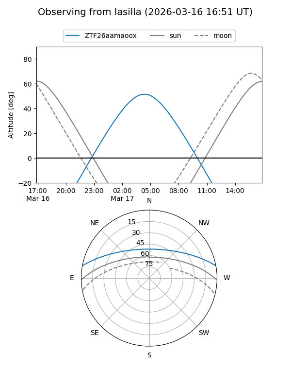
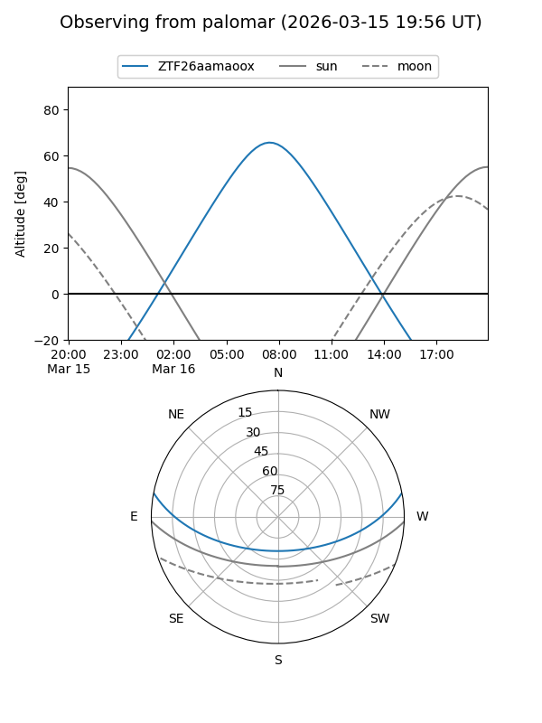

ZTF26aamaoox
Target ZTF26aamaoox at 2026-03-16 11:45
Aliases and brokers:
FINK: link
Lasair: link
ALeRCE: link
alt names
ZTF26aamaoox (ztf,fink_ztf)
Coordinates:
equatorial (ra, dec) = 168.8869,+9.25721
equatorial (HMS+DMS) = 11:15:32.85,+09:15:25.96
galactic (l, b) = (246.6928,+61.16106)
Flags:
Photometry:
last ztfg=17.83
1 ztfg detections
Lightcurve
Visibility


Additional plots